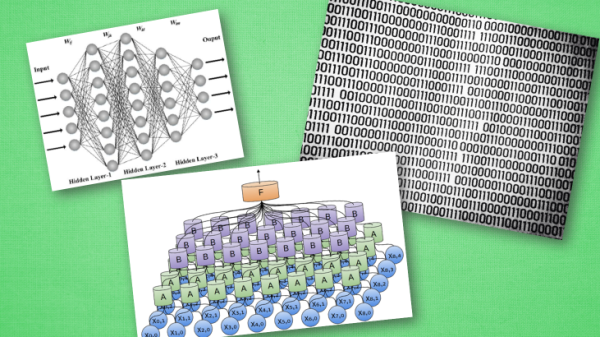
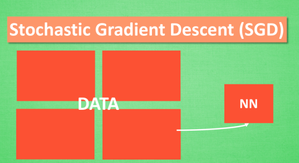
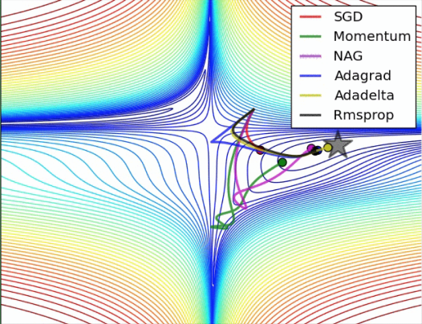
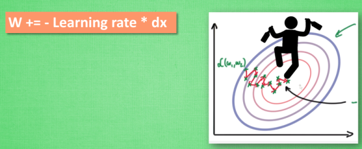
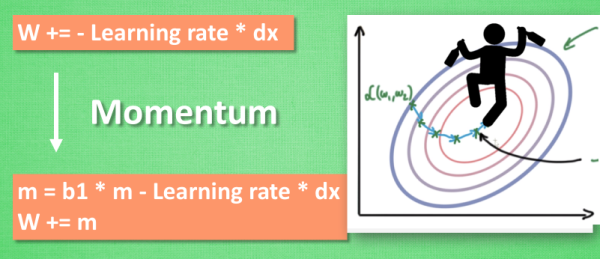
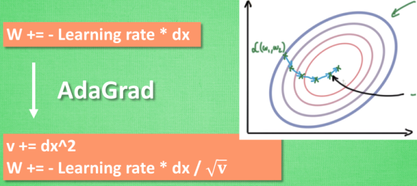
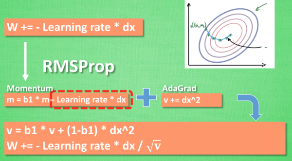
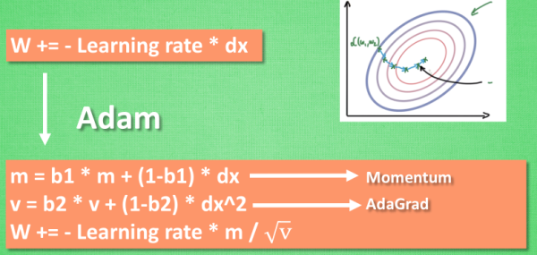

加速神经网络训练 (Speed Up Training)
作者: 莫烦 编辑: 莫烦
学习资料:
- 英文学习资料
- PyTorch 可视化优化器
今天我们会来聊聊在怎么样加速你的神经网络训练过程.
注: 本文不会涉及数学推导. 大家可以在很多其他地方找到优秀的数学推导文章.
包括以下几种模式:
- Stochastic Gradient Descent (SGD)
- Momentum
- AdaGrad
- RMSProp
- Adam

越复杂的神经网络 , 越多的数据 , 我们需要在训练神经网络的过程上花费的时间也就越多. 原因很简单, 就是因为计算量太大了. 可是往往有时候为了解决复杂的问题, 复杂的结构和大数据又是不能避免的, 所以我们需要寻找一些方法, 让神经网络聪明起来, 快起来.
Stochastic Gradient Descent (SGD)

所以, 最基础的方法就是 SGD 啦, 想像红色方块是我们要训练的 data, 如果用普通的训练方法, 就需要重复不断的把整套数据放入神经网络 NN训练, 这样消耗的计算资源会很大.
我们换一种思路, 如果把这些数据拆分成小批小批的, 然后再分批不断放入 NN 中计算, 这就是我们常说的 SGD 的正确打开方式了. 每次使用批数据, 虽然不能反映整体数据的情况, 不过却很大程度上加速了 NN 的训练过程, 而且也不会丢失太多准确率.如果运用上了 SGD, 你还是嫌训练速度慢, 那怎么办?

没问题, 事实证明, SGD 并不是最快速的训练方法, 红色的线是 SGD, 但它到达学习目标的时间是在这些方法中最长的一种. 我们还有很多其他的途径来加速训练.
Momentum 更新方法

大多数其他途径是在更新神经网络参数那一步上动动手脚. 传统的参数 W 的更新是把原始的 W 累加上一个负的学习率(learning rate) 乘以校正值 (dx). 这种方法可能会让学习过程曲折无比, 看起来像 喝醉的人回家时, 摇摇晃晃走了很多弯路.

所以我们把这个人从平地上放到了一个斜坡上, 只要他往下坡的方向走一点点, 由于向下的惯性, 他不自觉地就一直往下走, 走的弯路也变少了. 这就是 Momentum 参数更新. 另外一种加速方法叫AdaGrad.
AdaGrad 更新方法

这种方法是在学习率上面动手脚, 使得每一个参数更新都会有自己与众不同的学习率, 他的作用和 momentum 类似, 不过不是给喝醉酒的人安排另一个下坡, 而是给他一双不好走路的鞋子, 使得他一摇晃着走路就脚疼, 鞋子成为了走弯路的阻力, 逼着他往前直着走. 他的数学形式是这样的. 接下来又有什么方法呢? 如果把下坡和不好走路的鞋子合并起来, 是不是更好呢? 没错, 这样我们就有了 RMSProp 更新方法.
RMSProp 更新方法

有了 momentum 的惯性原则 , 加上 adagrad 的对错误方向的阻力, 我们就能合并成这样. 让 RMSProp同时具备他们两种方法的优势. 不过细心的同学们肯定看出来了, 似乎在 RMSProp 中少了些什么. 原来是我们还没把 Momentum合并完全, RMSProp 还缺少了 momentum 中的 这一部分. 所以, 我们在 Adam 方法中补上了这种想法.
Adam 更新方法

计算m 时有 momentum 下坡的属性, 计算 v 时有 adagrad 阻力的属性, 然后再更新参数时 把 m 和 V 都考虑进去. 实验证明, 大多数时候, 使用 adam 都能又快又好的达到目标, 迅速收敛. 所以说, 在加速神经网络训练的时候, 一个下坡, 一双破鞋子, 功不可没.
如果你觉得这篇文章或视频对你的学习很有帮助, 请你也分享它, 让它能再次帮助到更多的需要学习的人. 莫烦没有正式的经济来源, 如果你也想支持 莫烦Python 并看到更好的教学内容, 赞助他一点点, 作为鼓励他继续开源的动力.